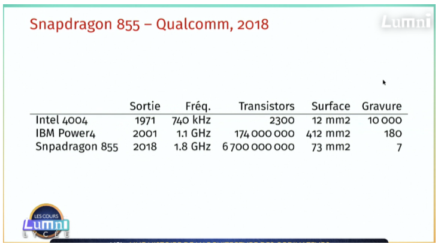
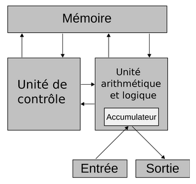
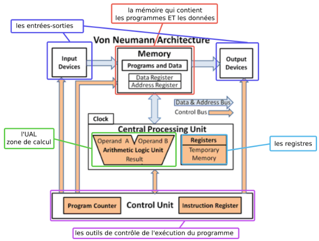

Modèle d'architecture de Von Neumann¶
Les ordinateurs tels que nous les connaissons aujourd'hui sont parfaitement intégrés à notre quotidien, si bien qu'il peut être difficile d'imaginer tout le cheminement qu'il a été nécessaire de faire pour en arriver là.
Les premiers "vrais" ordinateurs apparaissent aux États-Unis et en Angleterre, juste après la guerre. Il s'agit de machines capables d’exécuter des programmes. Mais qu'est-ce qu'un programme, d'abord ?
Un programme, c'est un algorithme ET des données. Les deux sont intimement liés, et doivent être stockés dans une mémoire.
Introduction : Histoire des ordinateurs¶
Avant d'en arriver à nos ordinateurs modernes, de nombreuses machines ont été réalisées depuis l'Antiquité pour effectuer des calculs.
Visionnez la petit vidéo suivante sur l'histoire de l'architecture des ordinateurs :
Exercice 1
En vous basant sur la partie de la vidéo ci-dessus, répondez aux questions suivantes :
- Comment étaient transmis les programmes avec l’ENIAC ?
- Reproduire le schéma de l’architecture de Von Neumann présenté dans la video.
- Quel était le composant fondamental des premiers ordinateurs (ENIAC, EDVAC) ? Quels étaient ses inconvénients ? Quel composant l’a remplacé dans les années 1950 et est encore utilisé dans les ordinateurs modernes ?
- Quelle invention bien plus robuste, pratique et performante a remplacé l'ancien composant ?
- Commenter le tableau ci-dessous.

- Qu’appelle-t-on System On a Chip ?
Le modèle de Von Neumann¶
Le modèle d'architecture de Von Neumann, fondamental dans la conception des ordinateurs modernes, tire ses origines des travaux novateurs d'Alan Turing sur les machines universelles.
Développé dans les années 1940 par le mathématicien et physicien John von Neumann, ce modèle a été influencé par les idées de Turing concernant les machines universelles de calcul.
L'architecture de Von Neumann repose sur le concept de programme stocké, où les instructions et les données sont traitées de la même manière et sont toutes deux stockées dans la mémoire de l'ordinateur. Cela contraste avec les premières machines, où les programmes étaient câblés physiquement. L'introduction de cette architecture a considérablement simplifié le processus de programmation, permettant aux programmeurs de manipuler les instructions comme des données.
Le modèle de Von Neumann a donc joué un rôle crucial dans l'évolution des ordinateurs en les rendant plus flexibles, programmables et capables d'exécuter une variété de tâches en fonction des instructions fournies, contribuant ainsi de manière significative à l'essor de l'informatique moderne.

Voir une version plus détaillé du modèle de Von Neumann

Modèle de Von Neumann
Un ordinateur est une machine programmable, automatique et universelle :
- programmable : la séquence d’opérations exécutée par un ordinateur peut être entièrement spécifiée dans le texte d’un programme ;
- automatique : un ordinateur peut exécuter un programme sans intervention extérieure (câblage . . .) ;
- universelle : un ordinateur peut exécuter tout programme calculable (selon la théorie de Turing) avec le jeu d’instructions câblé dans son processeur.
En 1945, John von Neumann, mathématicien hongrois exilé aux États-Unis, publie un rapport sur la réalisation du calculateur EDVAC où il propose une architecture permettant d’implémenter une machine universelle, décrite par Alan Turing dans son article fondateur de 1936 sur le problème de l’indécidabilité.
L’architecture de Von Neumann va servir de modèle pour la plupart des ordinateurs de 1945 jusqu’à nos jours, elle se compose de quatre parties distinctes :
- L’Unité Centrale de Traitement (Central Processing Unit en anglais) ou Processeur est constituée de deux sous-unités :
- L’Unité de Commande (UC) charge la prochaine instruction dont l’adresse mémoire se trouve dans un registre appelé Compteur de Programme (PC en anglais) ou Compteur ordinal, la décode avec le décodeur et commande l’exécution par l’ALU avec le séquenceur. L’instruction en cours d’exécution est chargée dans le Registre d’Instruction (RI). L’Unité de Commande peut aussi effectuer une opération de branchement, un saut dans le programme, en modifiant le Compteur de Programme, qui par défaut est incrémenté de 1 lors de chaque instruction.
- L’Unité Arithmétique et Logique (ALU en anglais) qui réalise des opérations arithmétiques (addition, multiplication...), logiques (et, ou...), de comparaisons ou de déplacement de mémoire (copie de ou vers la mémoire). L’ALU stocke les données dans des mémoires d’accès très rapide appelées registres. Les opérations sont réalisées par des circuits logiques constituant le jeu d’instructions du processeur.
- La mémoire où sont stockés les données et les programmes.
Il y a différents types de mémoires : la mémoire volatile (RAM par exemple), la mémoire permanente (disque dur par exemple). - Des bus qui sont des fils reliant le CPU et la mémoire et permettant les échanges de données et d’adresses. Les adresses, les données et les commandes circulent par les bus. Un bus ne peut être utilisé que par deux composants (émetteur/récepteur) à la fois !
- Des dispositifs d’entrées/sorties permettant d’échanger avec l’extérieur (lecture ou écriture de données).
Dans le modèle de Von Neumann, le processeur exécute une instruction à la fois, de façon séquentielle.
La mémoire¶
(à venir...)
En attendant, vous pouvez consulter cette page.
Instructions machine¶
Le CPU se consacre exclusivement à la gestion de grandeurs booléennes, d'où le codage en binaire des instructions qu'il exécute. Le langage machine (langage dit de base niveau) englobe l'ensemble des instructions directement exécutables par le microprocesseur. En opposition, les langages de programmation évolués (langages dits de haut niveau) tels que Python ou C++, conçus pour l'interaction humaine, présentent des instructions complexes opérant sur des types de données bien plus élaborés que les simples booléens.
Ainsi, une conversion du langage évolué vers le langage machine est nécessaire, où chaque instruction évoluée engendre plusieurs instructions élémentaires en langage machine. Cette transition peut se faire soit par compilation (pour l'ensemble du code, c'est le cas avec le langage C par exemple), soit par interprétation (au fur et à mesure du déroulement du code, c'est le cas avec le langage Python par exemple).
Instruction machine
Une instruction machine, essentiellement une chaîne binaire de 32 bits, se compose principalement de deux parties :
- le champ "code opération" spécifiant le type de traitement que le processeur doit réaliser (par exemple le code \(0010~0110\) donne l’ordre au CPU d’effectuer une multiplication),
- le champ "opérandes" indiquant la nature des données sur lesquelles l'opération désignée par le "code opération" doit s'appliquer.
Les instructions machines, qualifiées d'instructions de bas niveau, englobent :
- des opérations arithmétiques (addition, soustraction, multiplication).
Par exemple, on peut avoir une instruction qui ressemble à « additionne la valeur contenue dans le registre R1 et le nombre 789 et range le résultat dans le registre R0 ». - des transferts de données entre le CPU et la mémoire vive.
Par exemple, on peut avoir une instruction qui ressemble à « prendre la valeur située à l’adresse mémoire 487 et la placer dans la registre R2 » ou encore « prendre la valeur située dans le registre R1 et la placer à l’adresse mémoire 512 ». - des ruptures de séquence.
Par exemple : si l’instruction n°1 est située à l’adresse mémoire 343, l’instruction n°2 sera située à l’adresse mémoire 344, l’instruction n°3 sera située à l’adresse mémoire 345… Au cours de l’exécution d’un programme, le CPU passe d’une instruction à une autre en passant d’une adresse mémoire à l’adresse mémoire immédiatement supérieure :
Par exemple, après avoir exécuté l’instruction n°2 (situé à l’adresse mémoire 344), le CPU « va chercher » l’instruction suivante à l’adresse mémoire 344+1=345.
Les instructions de rupture de séquence d’exécution encore appelées instructions de saut ou de branchement permettent d’interrompre l’ordre initial sous certaines conditions en passant à une instruction située une adresse mémoire donnée.
Par exemple, dans le cas où à l’adresse mémoire 354 nous avons l’instruction suivante : « si la valeur contenue dans le registre R1 est strictement supérieure à 0 alors exécuter l’instruction située à l’adresse mémoire 4521 ».
Si la valeur contenue dans le registre R1 est strictement supérieure à 0 alors la prochaine instruction à exécuter est l’adresse mémoire 4521, dans le contraire, la prochaine instruction à exécuter est à l’adresse mémoire 355.
Les opérandes peuvent prendre la forme de valeurs immédiates, de registres du CPU, ou de données en mémoire vive.
Assembleur¶
L'assembleur facilite la lisibilité des instructions en remplaçant les mots binaires par des symboles mnémoniques.
Par exemple, une instruction binaire telle que \(111000101000~0010~0001~000001111101\) se traduit en assembleur comme "ADD R1, R2, #125" préservant la représentation binaire sous-jacente tout en simplifiant la programmation.
Il est à noter que chaque élément de l'instruction occupe une quantité de mémoire bien définie, par exemple, en architecture ARM :
- l'instruction ADD occupe les 12 bits de poids fort
- les adresses des registres R1 et R2 occupent chacune 4 bits
- l'opérande #125 occupe les 12 bits de poids faible.
Exercice sur les instructions machine